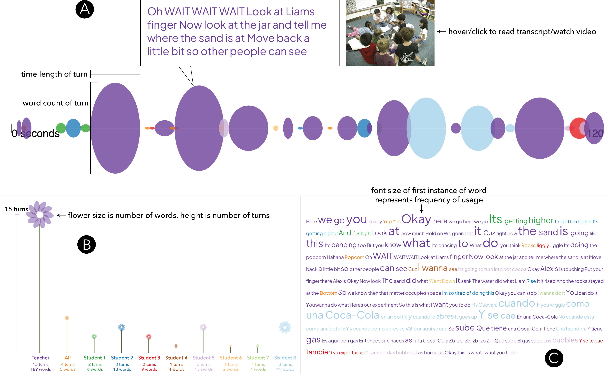

Figure 1. Screenshot from Transcript Explorer, an open-source visualization tool with individual and coordinated views of three techniques to interactively visualize transcripts linked to video: (A) Turn Chart, (B) Distribution Diagram, and (C) Contribution Cloud. Transcript and video from the focal 2-minute kindergarten classroom activity is shown in the coordinated view. Anonymized demonstration video available: here
